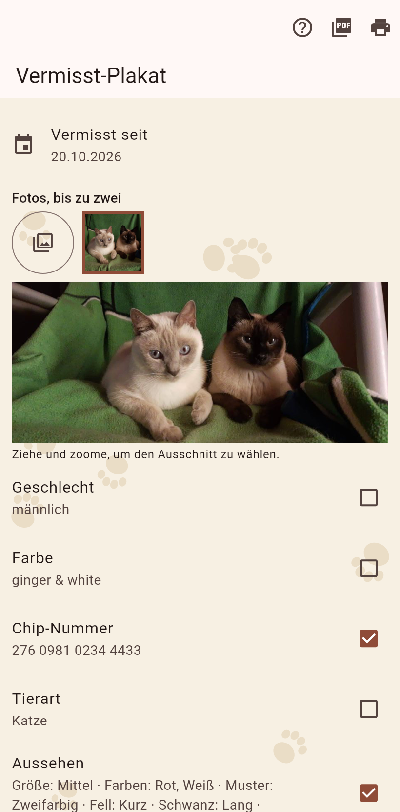

1. Das Plakat
Aus der Leiste der Katze. Hake an, was draufkommt, rahme bis zu zwei Fotos ein, ergänze eine Zeile. Die Seite zeigt den Druck; als PDF teilen oder drucken.

Ein Plakat für den Laternenpfahl, aus dem Datensatz.
Aus der Leiste der Katze. Hake an, was draufkommt, rahme bis zu zwei Fotos ein, ergänze eine Zeile. Die Seite zeigt den Druck; als PDF teilen oder drucken.
